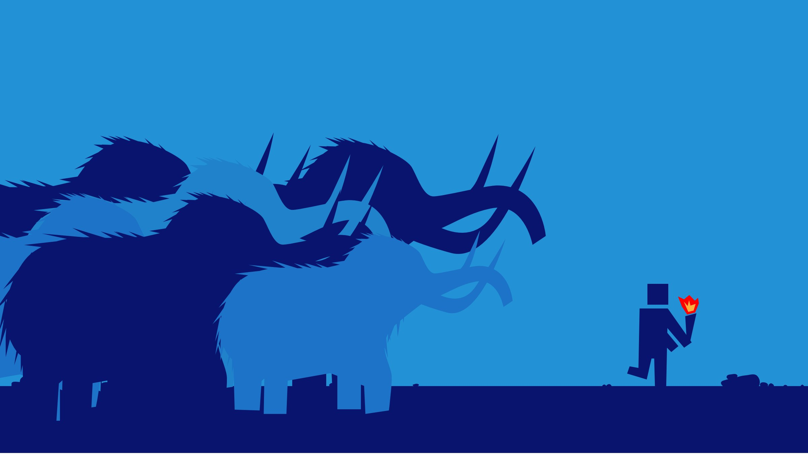
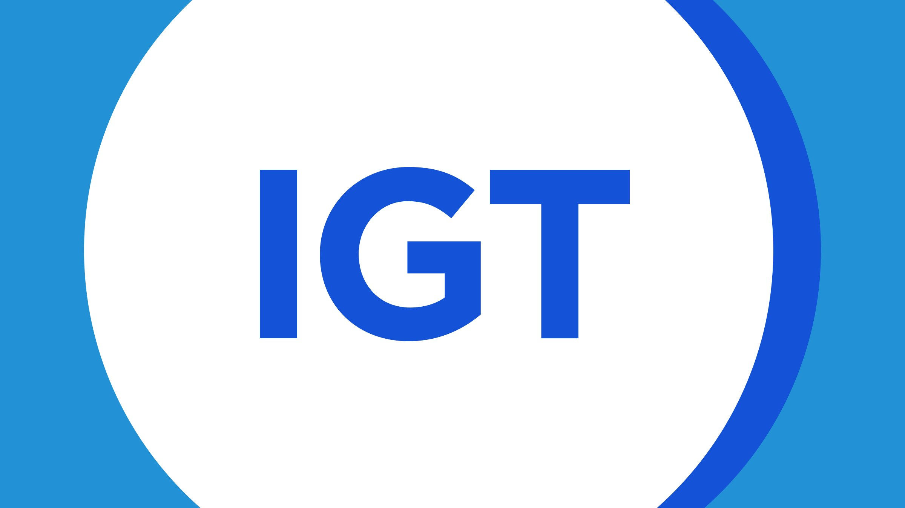

IGT Vision Video
Illustrated motion design for an IGT vision video, produced with Moving Brands in 2011.
The problem
Moving Brands needed a vision video for IGT; the files show a narrative arc told in chapters named "beginning of time," "during the industrial" and "and paradigm shifts," ending on the IGT mark.
The approach
The studio built the piece in flat, monochrome blue illustration: a figure carrying fire alongside woolly mammoths, a power grid wrapping a globe, a cruise ship, city skylines including a Las Vegas pyramid and Paris, a laptop interface, and stacked cubes and an "Innovation" pyramid used as abstract building blocks.
Work moved from Illustrator boards and an animatic to the final cut, which closes with kinetic type ("Under pressure / Perform"), coins resolving into the IGT logo, and a "Great experiences for players" lockup.


Leadership
Directed agency:collective's illustration and animation for the video, working for Moving Brands.